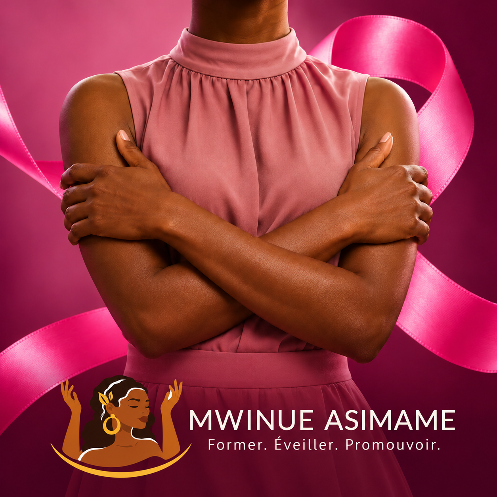

Certaines pratiques ou croyances peuvent circuler comme des « astuces » pour protéger les seins du cancer. Pourtant, en matière de santé, ce qui compte, ce sont les faits médicaux et une information fiable.
La stimulation des seins en dehors de l’allaitement ne constitue pas une méthode reconnue de prévention du cancer du sein. Elle ne remplace pas les conseils d’un professionnel de santé ni le suivi adapté à chaque personne.
En revanche, l’allaitement maternel, lorsqu’il est possible et prolongé, est associé à une réduction du risque de cancer du sein. Cela ne garantit pas l’absence de cancer et ne permet pas, à lui seul, de déterminer le risque individuel.
Restons attentives aux changements inhabituels : une nouvelle masse, une modification de la peau ou du mamelon, un écoulement inhabituel ou tout autre changement qui nous préoccupe mérite un avis médical.
L’autopalpation peut aider à mieux connaître son corps, mais elle ne remplace pas un dépistage ou un examen médical. Devant toute anomalie, consultons un professionnel de santé qui pourra nous orienter vers les examens et le suivi adaptés.
💗 S’informer, c’est déjà prendre soin de soi.
🎀 Octobre Rose : faisons reculer les fausses croyances, pas la prévention.
Mwinue Asimame
Former • Éveiller • Promouvoir
Ces commentaires sont des exemples destinés à illustrer l’espace ; aucun témoignage réel n’est présenté.
Le formulaire ne demande ni nom ni adresse e-mail. Évitez d’inclure des informations permettant de vous identifier.
L’envoi et la publication des commentaires ne sont pas encore reliés à un service sur ce site.
Commentaire anonyme
Merci de rappeler l’importance de vérifier les informations sur la santé auprès de sources fiables.
Répondre
Commentaire anonyme
Être attentive aux changements inhabituels et consulter en cas de doute : un rappel important pour prendre soin de sa santé.
Répondre
Commentaire anonyme
Merci pour cette mise au point. Une information générale ne remplace pas un avis médical personnalisé.
Répondre
Commentaire anonyme
Je retiens qu’il faut demander conseil à un professionnel devant toute anomalie.
Répondre
Commentaire anonyme
Le partage d’informations fiables aide à faire reculer les idées reçues.
Répondre
Commentaire anonyme
Parler de prévention sans relayer les fausses croyances est essentiel.
Répondre